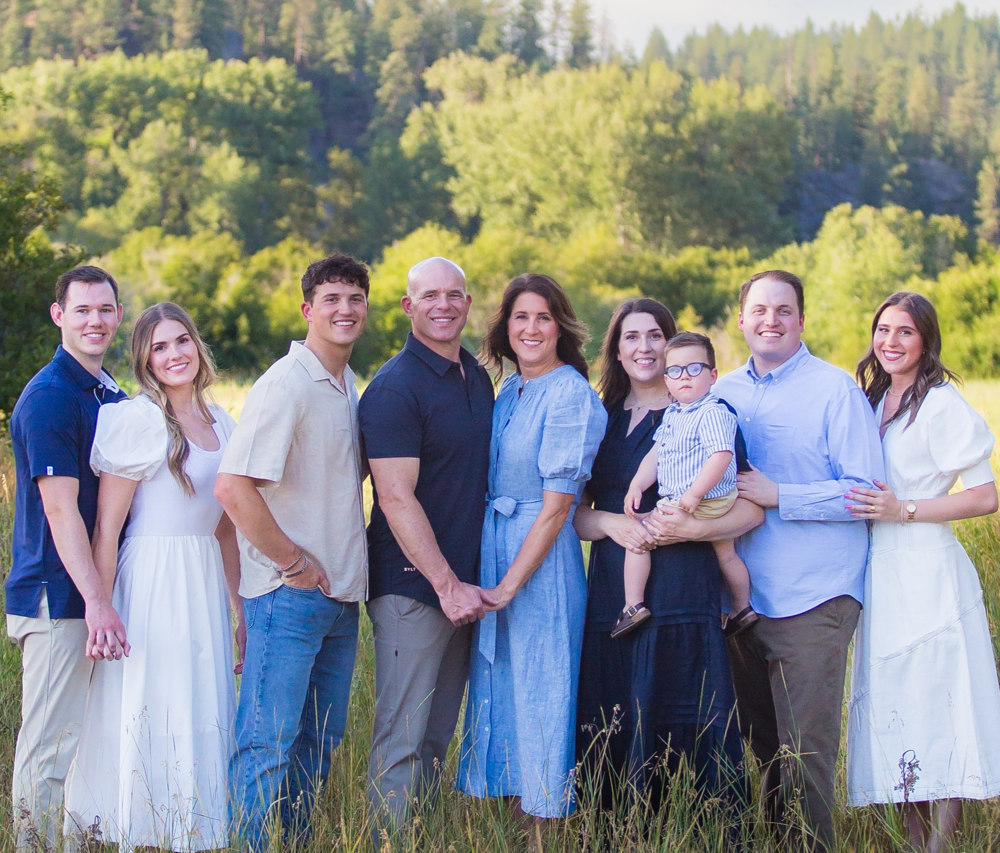

About Me
I am originally from Spokane, Washington, and I am currently a pre-business student at Brigham Young University in Provo, Utah. I take pride in giving my full effort to everything I take on. School, work, and personal projects all matter to me, and I try to approach each one with commitment, purpose, and a willingness to work hard.
I grew up with three sisters who have influenced the way I communicate, support others, and work as part of a team. Two of my sisters are married, and my oldest sister has a young son named Bennett who brings a lot of energy to our family. My younger sister, Haylie, currently lives in Provo, and being close to her has strengthened my appreciation for family and meaningful relationships.
Sports have been a major part of my life. I enjoy playing and watching football and lacrosse, and I value the discipline, teamwork, and resilience that athletics teach. I stay active through weight training and use fitness as a way to stay mentally sharp and physically healthy.
I also have a strong interest in photography and digital design. I enjoy creating clean and structured visual content, and I often look for ways to blend creativity with technology. Whether I am designing a webpage or capturing photos that tell a story, I like producing work that feels intentional and meaningful.
Personal growth is important to me. I try to learn from every experience and look for opportunities to improve my skills and contribute to the people and projects around me. I want to bring integrity, effort, and a positive attitude into every environment I am part of.
